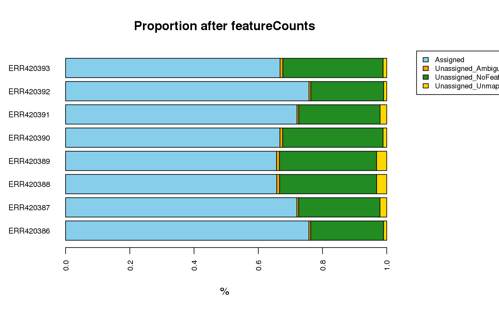

2.3 Quantification
Rsubread provides a read summarization function featureCounts, which takes two inputs:
- the aligned reads (BAM or SAM) and assigns them to
- genomic features (GTF annotation file)
This gives the number of reads mapped per feature, which can then be normalised and tested for differential expression.
Rsubread comes with in-built annotations for \(mm9\), \(mm10\) and \(hg19\) for users’ convenience, but you can also supply your own annotation file (GTF), see the tip below.
For experiments with lots of samples or on big genomes, this step can also take a while. We will only be performing the feature counts on the subset chr21 BAM file we created previously.
mini.counts <- featureCounts(output.bamFile,
annot.inbuilt="hg19",
isGTFAnnotationFile=FALSE,
isPairedEnd=TRUE)## NCBI RefSeq annotation for hg19 (build 37.2) is used.
##
## ========== _____ _ _ ____ _____ ______ _____
## ===== / ____| | | | _ \| __ \| ____| /\ | __ \
## ===== | (___ | | | | |_) | |__) | |__ / \ | | | |
## ==== \___ \| | | | _ <| _ /| __| / /\ \ | | | |
## ==== ____) | |__| | |_) | | \ \| |____ / ____ \| |__| |
## ========== |_____/ \____/|____/|_| \_\______/_/ \_\_____/
## Rsubread 1.24.2
##
## //========================== featureCounts setting ===========================\\
## || ||
## || Input files : 1 BAM file ||
## || P results/RNAseq/mapping/ERR420386.bam ||
## || ||
## || Dir for temp files : . ||
## || Threads : 1 ||
## || Level : meta-feature level ||
## || Paired-end : yes ||
## || Strand specific : no ||
## || Multimapping reads : not counted ||
## || Multi-overlapping reads : not counted ||
## || Min overlapping bases : 1 ||
## || ||
## || Chimeric reads : counted ||
## || Both ends mapped : not required ||
## || ||
## \\===================== http://subread.sourceforge.net/ ======================//
##
## //================================= Running ==================================\\
## || ||
## || Load annotation file /usr/lib64/R/library/Rsubread/annot/hg19_RefSeq_e ... ||
## || Features : 225074 ||
## || Meta-features : 25702 ||
## || Chromosomes/contigs : 52 ||
## || ||
## || Process BAM file results/RNAseq/mapping/ERR420386.bam... ||
## || Paired-end reads are included. ||
## || Assign fragments (read pairs) to features... ||
## || Total fragments : 161297 ||
## || Successfully assigned fragments : 72440 (44.9%) ||
## || Running time : 0.01 minutes ||
## || ||
## || Read assignment finished. ||
## || ||
## \\===================== http://subread.sourceforge.net/ ======================//Examine the attributes in the returned mini.counts object:
summary(mini.counts)## Length Class Mode
## counts 25702 -none- numeric
## annotation 6 data.frame list
## targets 1 -none- character
## stat 2 data.frame listFind the dimension of the counts table:
dim(mini.counts$counts)## [1] 25702 1mini.counts$counts[1:6,]## 653635 100422834 645520 79501 729737 100507658
## 0 0 0 0 0 0Look at the annotations, which corresponds to the rows of the counts table:
head(mini.counts$annotation)## GeneID Chr
## 1 653635 chr1;chr1;chr1;chr1;chr1;chr1;chr1;chr1;chr1;chr1;chr1
## 2 100422834 chr1
## 3 645520 chr1;chr1;chr1
## 4 79501 chr1
## 5 729737 chr1;chr1;chr1;chr1
## 6 100507658 chr1;chr1;chr1
## Start
## 1 14362;14970;15796;16607;16858;17233;17606;17915;18268;24738;29321
## 2 30366
## 3 34611;35277;35721
## 4 69091
## 5 136698;136953;139790;140075
## 6 319944;320881;321032
## End
## 1 14829;15038;15947;16765;17055;17368;17742;18061;18366;24891;29370
## 2 30503
## 3 35174;35481;36081
## 4 70008
## 5 136805;139696;139847;140566
## 6 320653;320938;321056
## Strand Length
## 1 -;-;-;-;-;-;-;-;-;-;- 1769
## 2 + 138
## 3 -;-;- 1130
## 4 + 918
## 5 -;-;-;- 3402
## 6 +;+;+ 793featureCounts also returns a very hand summary of the number of reads that were assigned or unassiged:
mini.counts$stat## Status results.RNAseq.mapping.ERR420386.bam
## 1 Assigned 72440
## 2 Unassigned_Ambiguity 227
## 3 Unassigned_MultiMapping 0
## 4 Unassigned_NoFeatures 87851
## 5 Unassigned_Unmapped 779
## 6 Unassigned_MappingQuality 0
## 7 Unassigned_FragmentLength 0
## 8 Unassigned_Chimera 0
## 9 Unassigned_Secondary 0
## 10 Unassigned_Nonjunction 0
## 11 Unassigned_Duplicate 0-
Run the above command to perform counting reads for the bam file and then take a look at the summary output.
-
Lookup the user guide for Rsubread and find the defintions for the status in
mini.counts$stattable, specificallyUnassigned_Ambiguity,Unassigned_NoFeaturesandUnassigned_Unmapped.
If you want to get read counts using another annotation.GTF file, use the annot.ext parameter. For example: counts <- featureCounts(output.bamFile, annot.ext=“annotation.GTF”, isGTFAnnotationFile=TRUE, isPairedEnd=TRUE)
For the purpose of this workshop the read summarisation step has already been performed for all libraries. You will need to load the corresponding Rdata file to get these read counts. You can then print out these counts in a text file for future use.
To load the Rdata object file:
load("../data/RNAseq/quantification/rawCounts.Rdata")
summary(counts)## Length Class Mode
## counts 205616 -none- numeric
## annotation 6 data.frame list
## targets 8 -none- character
## stat 9 data.frame listSince we will be using it later for DE analysis, let’s create a raw.counts object to hold only the count data:
raw.counts <- counts$counts
dim(raw.counts)## [1] 25702 8raw.counts[1:6,1:4]## ERR420386 ERR420387 ERR420388 ERR420389
## 653635 47 151 93 112
## 100422834 1 0 0 0
## 645520 1 2 0 0
## 79501 0 0 0 0
## 729737 15 35 47 57
## 100507658 10 5 15 8Challenge
-
What are the count statistics for the “Brain and Liver” study?
-
create a copy of the stats object and change the counts into proportion per sample.
-
The
statinformation fromfeatureCounts()will be much easier to digest if we can plot the proportion (or number) of reads assigned and unassigned due to the different status type. Can you create the following plot?

Solution
All lines starting with ## are comments.
Export out the counts table for every sample into a tab-separated file:
write.table(counts$counts, file=file.path(RESULTS_DIR,"raw_read_counts.txt"),
sep="\t", quote=F, append=F)